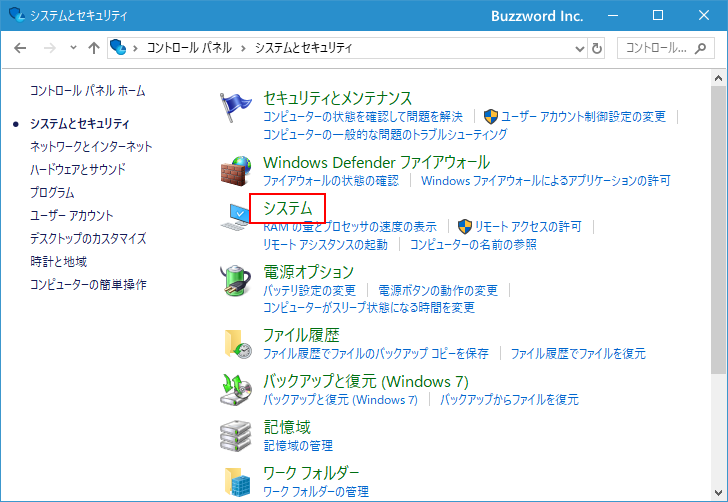
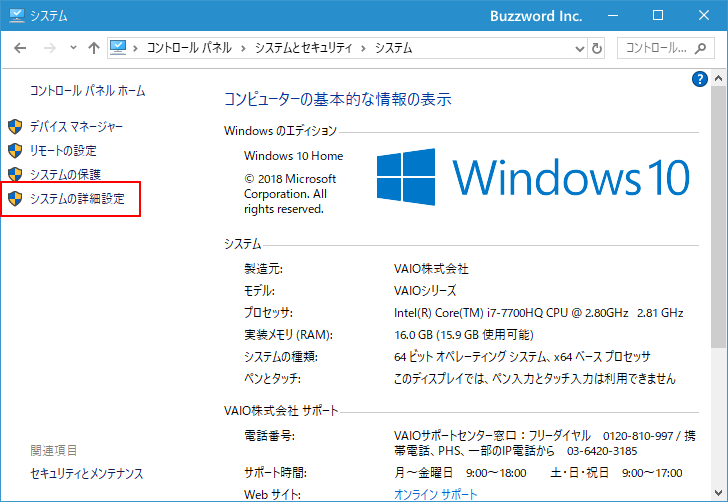
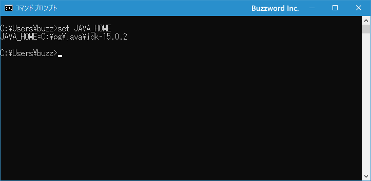

PATHの設定及び環境変数JAVA_HOMEの設定
Java を使ったプログラムのコンパイルや実行するために必要なファイルが設置されたディレクトリへ PATH を設定する方法について解説します。今後バージョンが変更になった場合や異なる JDK へ切り替えを少し容易にできるように環境変数 JAVA_HOME の設定を行った上で PATH を設定します。
Windows10で環境変数を設定する画面を表示する
PATH の設定や環境変数 JAVA_HOME の設定は環境変数の設定画面で行います。なお PATH も環境変数の一つです。 Windows10 の環境で環境変数の設定をするにはデスクトップ左下にあるスタートメニューをクリックし、表示されたアプリの一覧の「Windowsシステムツール」をクリックしてください。そして展開された一覧の中から「コントールパネル」をクリックしてください。
「コントロールパネル」が表示されたら「システムとセキュリティ」をクリックして下さい。
「システムとセキュリティ」の画面で「システム」をクリックして下さい。

「システム」画面で左側メニューの中の「システムの詳細設定」をクリックして下さい。

「システムのプロパティ」画面が表示されます。「環境変数」をクリックして下さい。
「環境変数」の画面が表示されます。

なおユーザー環境変数とシステム環境変数の2つがありますが、この2つの違いはユーザー環境変数の方で設定を行うと現在 Windows にログインしているユーザーだけに設定が反映されます。それに対してシステム環境変数の方で設定した場合には全ユーザーで共通して設定が反映されます。システム環境変数を設定できるのは管理者だけです。
ユーザー環境変数とシステム環境変数に同じ名前の環境変数を設定した場合、ユーザー環境変数で設定した値が有効となります。ただし環境変数 PATH に関しては特別で、ユーザー環境変数とシステム環境変数にそれぞれ設定があった場合、「システム環境変数;ユーザ環境変数」と合算した値が設定されます。 PATH は前の方に記述したものが優先順位が高いため、システム環境変数の設定の方から先に使用される点に注意してください。
環境変数JAVA_HOMEを設定する
それでは環境変数 JAVA_HOME の設定を行います。環境変数 JAVA_HOME は他のアプリケーションなどが Java を利用する場合に JDK のインストールされているディレクトリを探す場合があり、その時には JAVA_HOME と言う環境変数に設定されている値を参照することがあります。そこで環境変数 JAVA_HOME に JDK をインストールしたディレクトリを設定しておきます。
環境変数JAVA_HOMEを新しく追加する
変数のところに JAVA_HOME の項目がなかった場合は新規に追加します。「環境変数」の画面でシステム環境変数の下にある「新規」ボタンを押して下さい。
「新しいシステム変数」画面が表示されますので「変数名」に「JAVA_HOME」を、「変数値」に「C:\pg\java\jdk-15.0.2」を入力して下さい(ご自身が JDK をインストールしたディレクトリに合わせて入力して下さい)。入力が終わったら「OK」をクリックして下さい。
システム環境変数の中に「JAVA_HOME」が追加されました。
設定した内容を確認しておきます。一度環境変数の設定画面を閉じてから(閉じないと設定が反映されません)新しいコマンドプロンプトを起動し set JAVA_HOME と入力し実行して下さい。

上記のように設定した内容が表示されば JAVA_HOME の設定は無事完了しています。
既存の環境変数JAVA_HOMEの値を変更する
変数のところに JAVA_HOME の項目があった場合には既に環境変数 JAVA_HOME は存在しているので、値を変更します。「環境変数」の画面で変数が JAVA_HOME となっている項目を一度クリックしてから「編集」ボタンを押して下さい。
「システム変数の編集」画面が表示されます。今回は変更は行いませんが、変更する場合は「変数値」に設定されている値を直接変更したあとで「OK」をクリックしてください。変更が完了します。
環境変数PATHを設定する
Java のソースコードをコンパイルしたり、実行したりするために使われるプログラムは JDK をインストールしたディレクトリの中の bin ディレクトリの中に含まれています。

Java のプログラムをコンパイルしたり、プログラムを実行する場合には PATH を設定しておくと便利です。 PATH に設定されたディレクトリに含まれるプログラムは、どのディレクトリからでもプログラム名だけで実行することができます。 PATH を設定するというのは環境変数 PATH に設定されている既存の値に、新しいディレクトリを追加するということになります。
環境変数 PATH は Java だけでなく色々なアプリケーションで共通して使用される環境変数です。既に環境変数 PATH が存在し値が設定されている場合は他のアプリケーションが設定したものなので PATH の値を新しい値で上書きしてしまうと他のアプリケーションが動かなくなる可能性が高いです。 PATH の設定を変更する場合は既存の値に追加する形で変更します。
PATH にディレクトリを追加する場合は bin ディレクトリまでのフルパスを追加すればいいのですが(今回の場合であれば C:\pg\java\jdk-15.0.2\bin )、環境変数 JAVA_HOME に C:\pg\java\jdk-15.0.2 が設定されているのでフルパスを追加する代わりに %JAVA_HOME%\bin を追加します。
環境変数 JAVA_HOME の変数値を利用した記述をしておくことで、今後 JDK のバージョンが変わったり異なる JDK を使用する場合でも PATH の設定ではなく JAVA_HOME の設定を変更するだけで済むようになります。 PATH も JAVA_HOME も変更する手順は同じですが、 PATH は他のアプリケーションと共通して使用される重要な環境変数ですので PATH を直接編集しないで済むようになります。
それではシステム環境変数の中で「変数」が「Path」と書かれたものを探し、「Path」と書かれた箇所を一度クリックして選択してから「編集」をクリックして下さい。
「環境変数名の編集」画面が表示されます。
右上の「新規」をクリックすると左側の一覧の最後に新しい項目を追加できるようになりますので「%JAVA_HOME%\bin」を入力して下さい。入力が終わったら「OK」をクリックして下さい。
これで今まで PATH に設定されていた値に Java で使用する PATH を追加することができました。
設定した内容を確認しておきます。一度環境変数の設定画面を閉じてから(閉じないと設定が反映されません)新しいコマンドプロンプトを起動し javac -version と入力し実行して下さい。
上記のように表示されば PATH の追加は無事完了しています。
もし次のような「'javac' は、内部コマンドまたは外部コマンド、操作可能なプログラムまたはバッチ ファイルとして認識されていません。」というエラーが表示されてしまう場合は PATH の設定が間違っている可能性が有ります。
エラーの場合は、環境変数 JAVA_HOME の設定および PATH の設定を今一度確認してみてください。
-- --
Java を使ったプログラムのコンパイルや実行するために必要なファイルが設置されたディレクトリへ PATH を設定する方法について解説しました。
( Written by Tatsuo Ikura )

著者 / TATSUO IKURA
初心者～中級者の方を対象としたプログラミング方法や開発環境の構築の解説を行うサイトの運営を行っています。